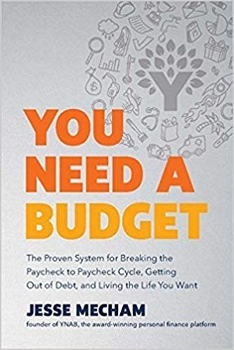

You Need a Budget

By Jesse Mecham
Book Summary
This book is about a method that saves people $600 on average in their first two months. It's got a huge fan base — because it works. It's a set of common-sense rules that, with consistent implementation, ensures your money is working for you, instead of the other way around. After a few months of practicing it, it has changed the way I relate to money.
YNAB focuses on building a spending plan around the money you have right now (as opposed to money you'll get in the future). You move from thinking "Can I afford this?" — you're likely to afford many things if you have cash in hand — to asking yourself "Does this move me closer to any of my goals?". Your spending becomes about real trade-offs, the way it's supposed to be.
Notes
YNAB starts with dividing the money you have right now into different areas.
- Immediate Obligations
✪ Rent/Mortgage
✪ Electricity
✪ Water
✪ Sewage
✪ Insurance
✪ Phone - True Expenses
✪ Home Maintenance
✪ Groceries
✪ Medical
✪ Auto Maintenance/Transport
✪ Stuff I forgot to budget for - Quality of Life
✪ Software Subscriptions
✪ Fitness
✪ Clothing
✪ Gifts
✪ Education
✪ Vacation
✪ Giving - Budgeting For
✪ Phone
✪ Ergonomic Chair - Just for Fun
✪ Dining Out
✪ Fun Money - Savings Account
- Investing Account
The areas and the categories in each area will differ for everyone. The point is to allocate every dollar in your account to one of the categories, until your balance reaches zero (zero-based budgeting).
Rule 1: Give Every Dollar a Job
Budgeting vs Forecasting
Budgeting deals with money you have right now. Forecasting is trying to budget with money you don't have right now, and guessing the numbers.
Budgeting leaves you confident. It lets you see where your money is actually going and re-route it if necessary. When you budget for an area (eg Dining Out) you can buy that latte guilt-free, knowing that you've already accounted for it.
You're also setting aside money for savings, investing and fun!
What do I want my money to do for me?
Being hyper-intentional about your spending frees up a lot of anxiety around money. When you’re spending more than you budgeted on an area, you’re taking away money from another area. It makes you viscerally aware that there’s a trade-off.
Budgeting this way also makes you question your assumptions. You can almost always do something to reduce your spending. Challenging every assumption can make a big impact on your budget: switching to a cheaper data plan, cutting either Netflix or Hulu.
Start by budgeting for payments you’re obligated to make to keep your life running: food, shelter, fees, internet, electricity. After your essentials, budget money for true expenses.
Rule 2: Embrace Your True Expenses
This rule is a subset of Rule 1. But it's the biggest mindset shift in YNAB so it deserves its own rule.
True expenses are products or services that you know for sure that you're going to need in the future. Might be a car, doctor visits, life events etc.
If you know a big purchase is somewhere on the horizon, start setting aside money for it from your current balance. This breaks your large infrequent bills into smaller, frequent milestones.
When you know what the money is for, you’re less likely to siphon from it for a sudden purchase. You'll start thinking “if I buy this now, I’ll have less money for that thing I want in three months”. Even if you make the purchase, you know how much you need to put back.
Every time you put money toward a long term priority, you’re sending money ahead to the Future You, setting your Future You up for success.
Rule 3: Roll With the Punches
A good budget is one you can stick to, and you have to change your budget if you expect to stick to it.
You are accountable for your bottom-line: money in minus money out. With a finite amount of money to play with, you can and should re-prioritize to adapt to new information.
YNAB rolls over your budget to the next month automatically. This ensures you're saving up consistently for your True Expenses, and tweaking your budget for different areas. If you over-spend on an area each month, being honest with yourself and increasing the budget for that area can be liberating.
Rule 4: Age Your Money
The by-product of following rules 1-3 is that your money ages, getting you to a point where you don't have to rely on your next paycheck.
Think of your money as a First-In-First-Out stack.
You want to increase the time the money spends in the container before it gets spent. You're creating a financial buffer. The older the money is that you spend, the better.
Instead of having a stack of bills waiting for money, you'll always have a stack of money waiting for bills.
The YNAB software automatically calculates the age of money using the date of your transactions.